The images of the object were captured using an iPhone12 at 1x zoom. The final images used for Nerf training were downsampled from the original resolution
of (height, width = 4032, 3024) to (height, width = 512, 384). The camera intrinsics (focal lengths and optical center) were scaled accordingly.
Object
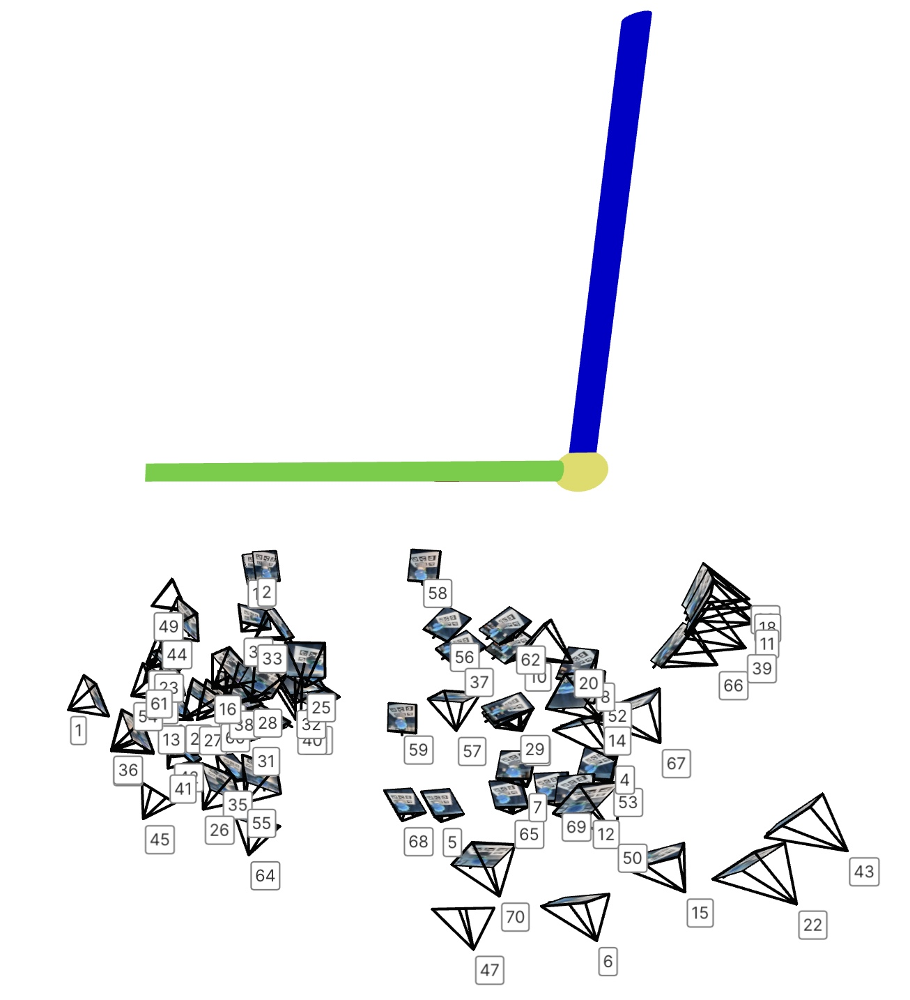
View 1
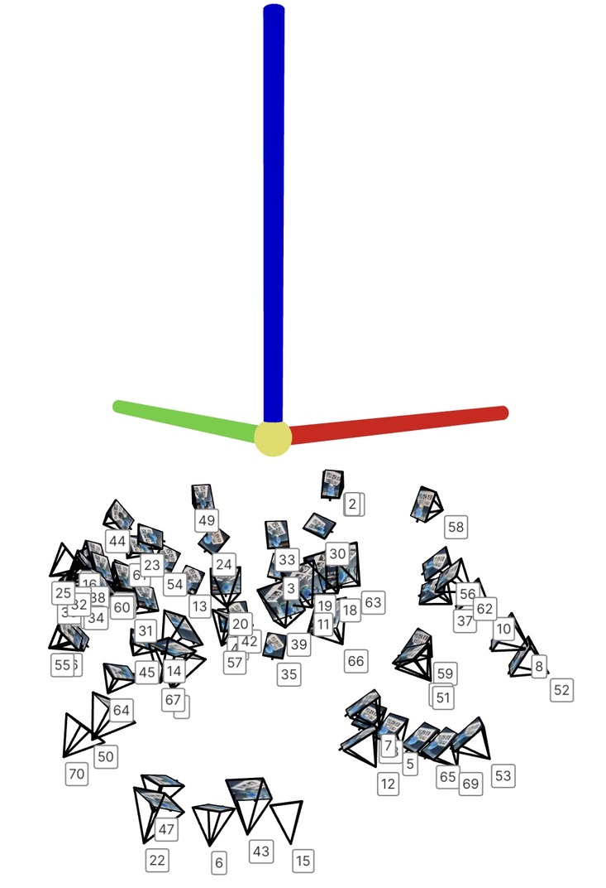
View 2
Part 1: Fit a Neural Field to a 2D Image
Model: Same as suggested with hidden units or width = 256, L = 10, lr = 1e-2, batch size = 10000 and Epochs = 40.
It was crucial to normalize the input and the rgb value. Without that I was getting a black image.
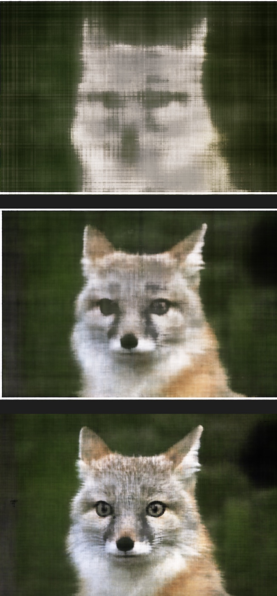
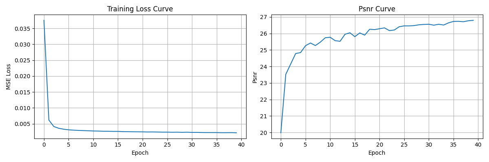
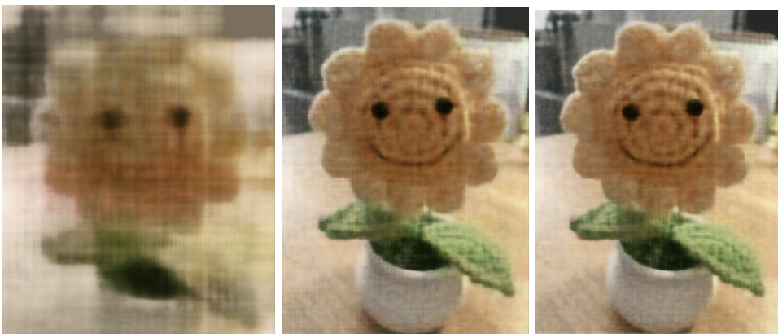
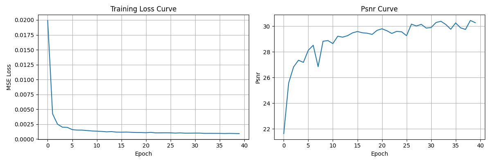
Here, we see that bigger L value plays a huge impact in capturing the high frequency details whereas the model width appears to be responsible
for better capturing structures and coarse features.
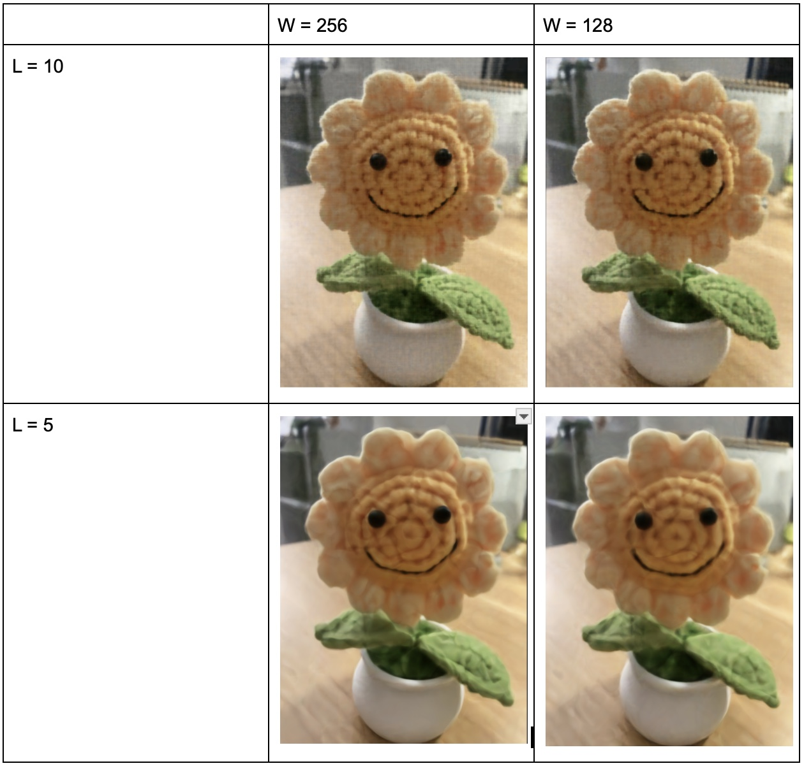
Part 2: Fit a Neural Radiance Field from Multi-view Images
1. Functions like pixel to ray conversion and camera ray to world conversion to obtain rays in the world frame.
2. Dataset class creates randomly sampled batch of rays from all the images in the training set.
3. Once the rays are formed, a set of points are uniformly sampled between set near and far bounds. To avoid overfitting, noise is added to these sampled points.
4. A Fully connected network is created to encode the radiance field of the scene. The input of the network is 3d position (ray samples) and 3d viewing direction. The output is rgb color and density.
5. Volume rendering function uses the image rendering equation to composite the colors of samples along the rays to each individual pixels of the target image.
6. The loss function is the mean sqaure error between the volume rendered image and the grund truth image.
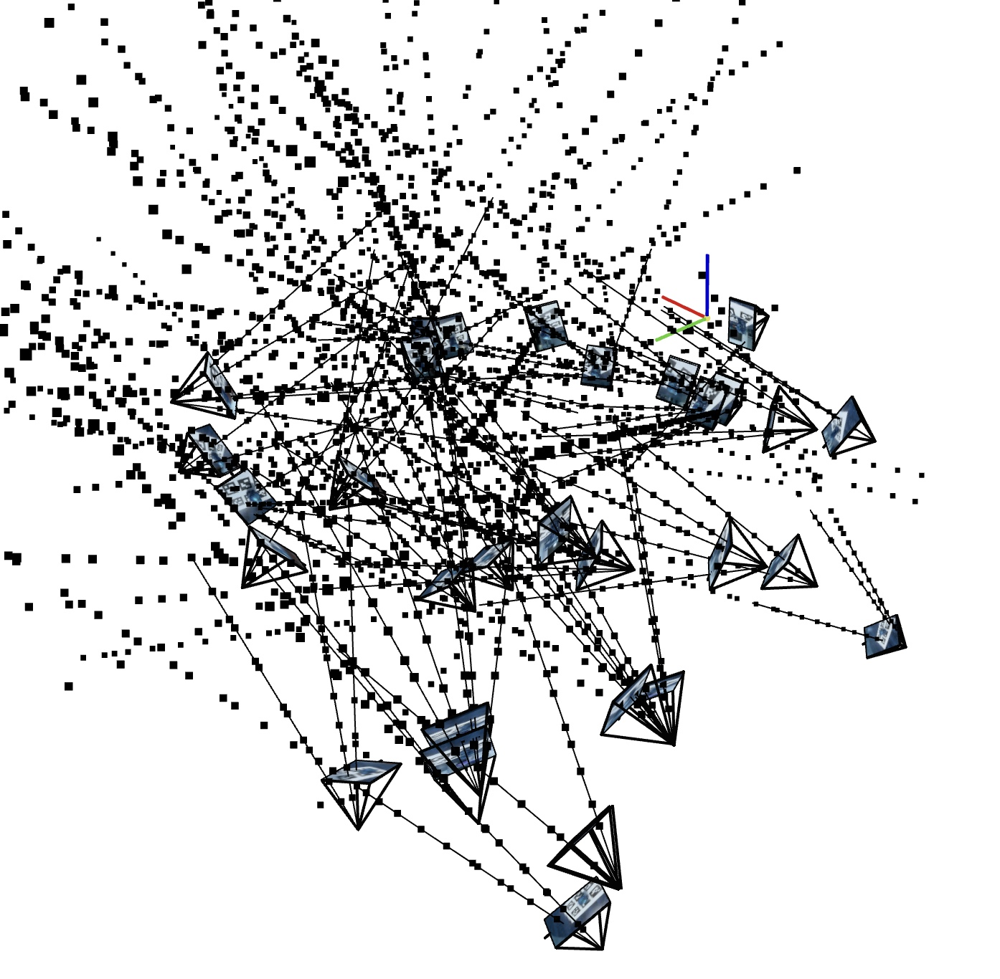
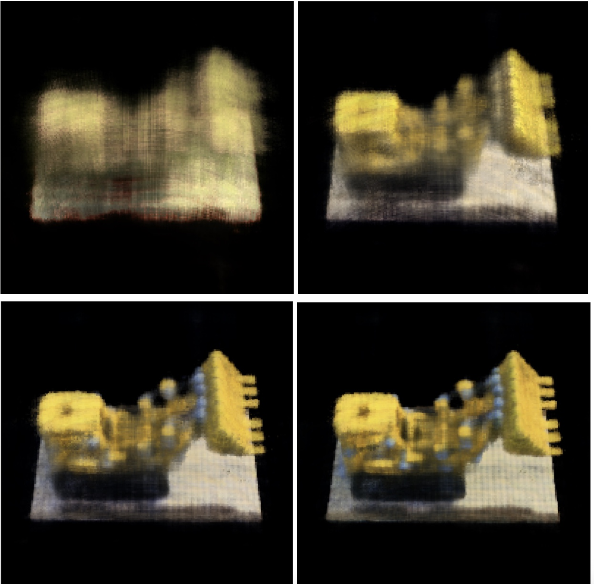
Model Parameters: As per the recommendation. Average Psnr on validation set = 23.8 in 1000 iterations.
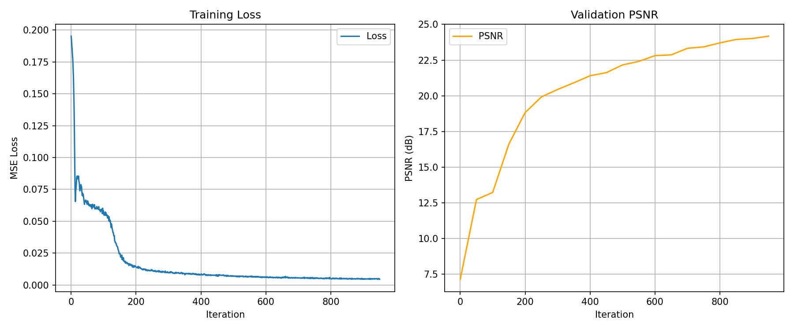
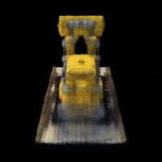
Part 2.6: Training with Your Own Data
For real images, I downsampled the images and scaled the intrinsics accordingly. A total of 71 images were collected out of which 50 images were set aside
for training. However, convergence seemed to be stuck. I plan to test the following to overcome this issue. Downsample the image size further
or increase the model layer width or depth. I also plan to try this with a voxel or other representations. Additionally, I would like to try fine sampling
after coarse sampling. (I have attached the unsuccessful attemot at reconstructing my image at even 5000 iterations).
For the lafufu dataset, things worked well and the parameters I used were as per suggestion. Batch = 10000, Iterations = 10000, near = 0.02, far = 0.5, lr = 1e-5